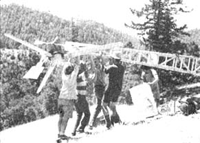
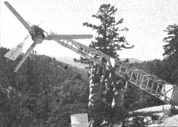
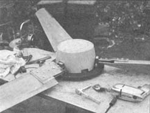
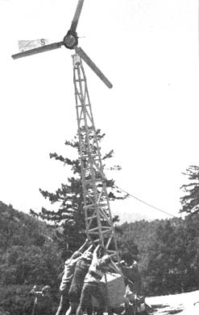
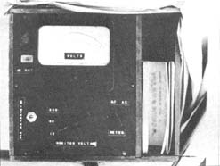
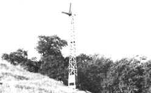
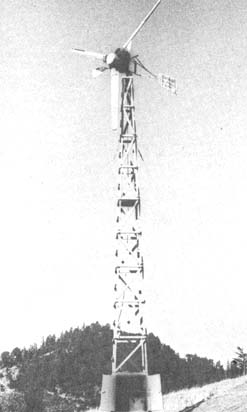
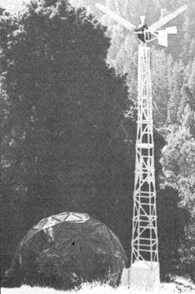
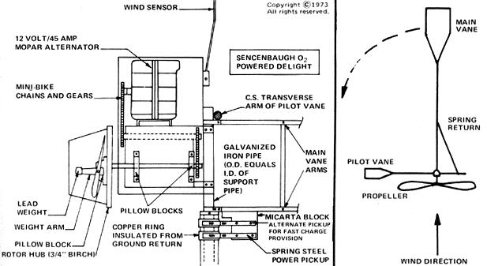

SPECIAL NOTE: The folks shown here pushing up the windmill tower are part of a wedding party! John and O'Malley Stouman (the people who own the land on which the wind engine is erected) were married the day before the unit went up... and everyone who came to the wedding helped assemble the dome and install the generator. The bride herself christened the power rig the "Sencenbaugh O 2 Powered Delight".
Intrigued-as many folks are nowadays-by the idea of free, nonpolluting electrical energy, I set about constructing (with a little help from my friends) a wind charger of my own design. The research, planning, blueprinting and building consumed a little over a year's worth of spare time . . . but the months of work seemed well worth the investment the first evening we enjoyed stereo music and fluorescent lighting powered by our self-contained system.
The total cost of my homebuilt unit was a little over $400 and-now that I've pioneered the design-I'm sure you can duplicate the rig for from $300 to $350, depending on your choice of batteries. I'm also reasonably confident that you should be able to construct a wind charger like mine in any ordinary home woodworking shop. Everything but the blades can be made with hand tools and an electric drill. If you're exceedingly clever and determined, I suppose you might even fabricate the propeller with a 14" band saw and hand sand them . . . but I recommend that you figure on using a tilting table saw and belt sander for building the three airfoils.
My complete wind-driven electrical system consists of five main parts: [1] the fan, which is rotated by the wind and which-in turn-drives [2] the unit that generates direct current, [3] a tower that supports the first two components, [4] batteries and [5] an inverter that changes the direct current to alternating current.
The fan on my wind charger is a wooden, three-bladed variable pitch (constant speed) propeller ten feet in diameter. The prop is made of clear white pine and is sealed and protected by an epoxy resin compound called Envirotex.
I chose the three-blade design because my research indicated that such an arrangement provides the best balance and highest efficiency. The "Clark Y" airfoil that I used was picked because it gives high lift at low speeds.
For optimum efficiency, it's quite important that a windmill's entire prop-rotor assembly be very carefully balanced so that all loads are equally distributed along the blades at high speeds. Otherwise the rotor vibrates as it turns, performance falls drastically and the whole unit can be endangered.
This balancing can be done statically-that is, with the fan at rest-by placing the completed and painted prop assembly on a free pivot at the hub's center point and using a level to compare two planes 90 degrees to each other on its face. (EDITORS NOTE: Statically balancing a windmill's fan will, indeed, improve its performance . . . but really technically oriented experimenters may well want to dynamically balance - true up the prop assembly while it rotates at speed - a rotor that is designed to turn at higher rpm's. This is a much more difficult operation, however, and is hardly worth the trouble for any prop assembly that is intended to spin at ordinary windmill speeds.)
We used a simple string level line placed directly on the flat surface of the rotor hub to statically balance our windmill's fan. Small lead weights were placed about the hub until it was level in both planes and the weights were then secured to the hub with screws. After the operation the rotor assembly began turning in a wind 5 mph slower than before, accelerated to maximum speed faster and produced almost no vibration on the input shaft. Balancing is very important!
This summer, after school is over, we plan to experiment with an entirely different kind of windmill prop called a sail wing . It's currently being developed at Princeton University (see Aviation Week and Space Technology, November 13, 1972, page 47) and is a foldable, lightweight, flexible wing with a high lift-to-drag ratio. The concept is both unique and exciting in that the airfoil actually twists as rpm increases . . . thus creating a very efficient angle of attack at all wind speeds. Stay tuned to MOTHER for news of our work with the idea.
I planned, from the beginning, to install my windmill in a remote area and took pains to design the machine to be both reliable and-equally important-self-regulating.
To prevent propeller overspeed (and potential disaster), I fell back on a device used in 1908 by Kenwood Manufacturing, a maker of prairie windmills. This is a pilot vane (or air governor) placed at right angles to the main vane (or tail) which holds my machine's fan into the wind. As developed by KenWood, a pilot vane is generally between 50-70% as large as the total area of the main tail (the determining factor being the prop size and tip speeds of a windmill's fan). The idea, of course, is that as wind velocity approaches a critical level, the pilot vane will increasingly counteract the main tail and turn the fan further and further away from directly facing the moving air mass.
The pilot vane is a simple and effective device . . . when winds are steady. During gusty and outright violent conditions, though, it's sometimes better to completely shut down a wind plant. One of the easiest ways to do this is by designing the main vane to fold into position alongside its little brother so that-as it continues to streamline itself-it safely faces the prop out of the blasting flow of air. During normal operation the big tail is held in its regular position by spring tension and folding is initiated from the ground by the use of a rope and pulley system. The foldable main vane was popular among homebuilders in the 1920's and '30's and is quite effective.
In addition to the pilot vane and folding main vane that I've put on my windmill to prevent overspeeding, I've added yet a third device that accomplishes the same end. This is a mechanism that automatically feathers the propeller (lessens the angle of attack of its blades) as the fan starts to over-rev, thereby spilling off lift and maintaining a safe prop rpm.
This system is activated by centrifugal force (and you know what that is if you've ever tied something to a string, swung it in a big circle, let go of the twine . . . and watched the object travel off in a straight line). By placing a lead weight on a lever arm attached to the bases of the three propeller blades so that the lever depitches the airfoils as the centrifugal force generated by increasing rpm's tries to throw the lead weight "out", the fan will regulate its own top speed quite effectively. The blades, of course, are held at the maximum effective angle of attack for slow speed operation by spring tension and they're kept from depitching too much by stops that limit their travel in that direction.
Actually, this latter technique for controlling propeller overspeed is probably the most effective of all. We've retained the pilot vane on our wind plant, however, as a measure of insurance and kept the moveable main vane as a simple and effective means of completely stopping the fan whenever we desire.
By the way, we initially tested these various mechanisms by attaching our windmill's whole rotor assembly to the front end of my old Porsche and driving up and down the street. Our neighbors at first thought we were experimenting with the flight characteristics of German autos, but soon dismissed our actions as normal nonsense.
We chose to mount an automobile alternator on our wind plant for the production of electricity for good reasons: such a unit is now readily available in junkyards for little or nothing and it produces usable current at lower rpm's than a generator.
An alternator is simply an AC (alternating current) generator with its cycle unregulated and its output rectified through a diode bridge so that the unit yields fullwave DC (direct current). The main advantage of DC over AC, of course, being that direct current can be stored in batteries for use when the wind isn't blowing.
Due to the fact that an alternator creates electrical energy by inducing a field current into the rotating field of an armature, we did have to overcome one problem before we could satisfactorily drive such a unit with an irregular source of power like the wind. An alternator will generate AC (which, changed into DC, can be stored in batteries) only as long as the armature spins and cuts across the field current's lines of electromagnetic force. If the field current is left on while the armature is at rest, however, the unit will slowly drain any batteries to which it's connected.
The obvious solution to this hang-up is to build a device that will turn the alternator on only when the wind is blowing strong enough to generate power. Our approach was to use a vane (another vane!) dampened with a spring (another spring!) to operate a relay capable of switching on and off the alternator's three amps of field current. We call this our "wind sensor" and we set it to turn field current into the alternator when the breeze reaches a velocity of 8 mph. It works beautifully.
The alternator is coupled to the windmill rotor with standard go-cart chains and gears so that the generating unit turns faster than the prop (if you build a system like mine, the suggested ratio of alternator to rotor rpm's should be somewhere between 7:1 and 9:1). I used two sets of chains (see view of generator assembly) to minimize any stretching and derailing tendencies and when our prop turns over at 100 rpm in a 12 mph wind, the alternator spins up fast enough to produce electricity at a medium charging rate.
The structure which supports the rotor-alternator combination is 22 feet high and fabricated of 2 X 2 Douglas fir. Although my choice of lumber may seem to be somewhat on the light side, the tower has steadfastly withstood the rather large loads imposed upon it. The secret is in the framework's careful design and construction.
Please note-in the accompanying photographs-the tower's lattice design with opposing diagonals on each side. The structure is reinforced with internal bracing at its top where the rotor-alternator support pipe anchors . . . it's strengthened again halfway down by a horizontal 3/4-inch plywood plate . . . and it's reinforced once more at the bottom by a plywood storage cabinet. All joints are secured with galvanized nails and Resorcinol, a waterproof marine glue. The wood is sealed with three coats of outdoor sealer and painted with two coats of Sears "Sky Blue" latex house paint.
There's a built-in ladder up one side of the structure and the tower is guyed at four points and anchored to 2 X 2-inch angle iron embedded three feet deep in a 4 X 4 X 3-foot deep concrete foundation. The whole plant is hinged on two of the angles and can be pushed upright by four people (just make sure the shortest fella is closest to the pivot point). A brush arrangement built into the support bracket on top allows power to be transferred down the framework to the cabinet at the bottom while the rotor-alternator assembly remains free to weathercock through a full 360 degrees.
The cabinet at the base of the tower houses several surplus 70-amp/hour nickel-cadmium aircraft batteries, a regulating system and a solid-state DC-to-AC inverter that produces 500 watts of 60-cycle, 110-volt AC (typical house current).
The batteries and inverter are located close to the generator for a very important reason: the dome that my wind plant was set up to power is 125 feet away from the tower and DC transmission through a conductor of that length would result in an unacceptably large voltage drop. AC transmission losses, on the other hand, are very low . . . so, by converting the DC to AC as soon as possible and then making the long run with alternating current, our whole system becomes much more practical.
If you try to duplicate my wind-powered generating station you may be tempted to save some money by substituting new or used automobile lead-acid batteries for the nickel-cadmium batteries I've used. If you do,, be sure to include a regulator between the generating unit and the storage units to protect the batteries from being overcharged. Overcharging lead-acid batteries can warp their plates, severely damage them in other ways and make them worthless.
Lead-acid electrical storage units have additional disadvantages. They can lose up to 50% of their capacity in cold or freezing weather, they do not dissipate heat well when under high-current stress, they contain acid that can violently burn the flesh, they're large, bulky and heavy and-sooner or later-they deteriorate internally. Why do we use them? Because they're economical to produce and they work well enough when installed in a car or truck.
Nickel-cadmium aircraft batteries make far better electrical storage units. They're virtually indestructible (broken cells are repaired with epoxy), smaller, lighter and retain 100% of their capacity in cold weather. Ni-Cad batteries also charge faster, high currents can be drawn from them without damaging the units internally and their electrolyte (an alkaline) is less hazardous than acid. Since N-C batteries cannot be overcharged, you can omit the voltage regulator when you use them. (The alternator-unlike a DC generator-will not pass reverse current through itself because of its diodes . . . and will charge only to the load it "sees". If it sees a fully charged N-C battery, the alternator will produce just a minimum amount of current . . . which will not bother a nickel-cadmium storage unit.)
The only real drawback to N-C batteries is their cost. New, they are very expensive . . . BUT, given proper care, they're considered by many mechanics to be true lifetime batteries and they can be obtained through surplus houses for just about the cost of new lead-acid storage units. Write to ESSE Radio Co., 368 S. Meridian St., Indianapolis, Indiana 46225 and ask for their price sheet on Ni-Cad batteries and you'll be surprised at the bargains you find listed.
For converting my system's 12-volt DC into usable 60-Hz (cycle), 110-volt AC, I picked a Heathkit Model MP-14 solid-state inverter from the Heath Co., Benton Harbor, Michigan 49022. The unit will produce 400 watts of 110-volt AC continuously or 500 watts intermittently at 80-85% efficiency. This is enough alternating current to operate fluorescent lights (which consume much less power than incandescent lamps), phonographs, electric razors, TV's with transformer power supplies, drill motors and almost anything else within its design parameters. In other words-with the exception of ridiculously gluttonous electrical appliances such as room heaters, stoves and air conditioners-the little Heath inverter supplies more than enough AC power for almost anything you'd care to operate electrically in a dome or small cabin.
Once the "juice" developed by my wind-driven system is converted to AC, it's carried to the dome via underground outdoor cable. There, on a master control panel in the building, we can monitor AC output and battery charge (respectively) on a combination AC-DC voltmeter. By flicking a switch on the panel, we can either charge the batteries at the normal rate or-during winds of short duration-fast charge the storage units by changing the field windings of the alternator from their usual 12 volts DC to 110 volts DC.
Another panel switch controls a relay which turns the inverter on and off at the base of the windmill. This relay, it should be noted, requires about .25 amps of 12-volt DC current for its operation . . . which is nothing compared to the electrical loss that would take place if we tried to bring direct-instead of alternating-current to the dome.
The Heathkit inverter dented my pocketbook $130 but I think it was worth it . . . especially since it has a built-in provision for remote control (which I use every time I turn the unit on or off from the dome 125 feet away) and its output transformer secondary taps can be switched to compensate for low battery voltage input or AC voltage drop due to load changes.
The only drag about this particular inverter is that-even though it's available directly from Heath's home office and the company's big city dealers-it doesn't seem to be a stock item (at least it doesn't appear in the Heath catalog). But never mind. Any comparable inverter can be substituted, I suppose, provided a relay is added for the external control.
The Dodge Dart alternator I adapted to my system goes, used, for $15.00-$20.00 out here on the West Coast . . . but I got three absolutely free from a mechanic who said that he didn't want them lying around anymore!
I spent a little better than $70.00 for my bank of Ni-Cad batteries and I'd advise you to lay out the cash to assemble yourself enough storage units to total a minimum of 100 amp/hrs . . . . more if your local winds are very sporadic.
The bearings, pillow blocks and shafts for my light plant all were obtained by mail from Sears and the remaining mechanical odds and ends came from neighborhood hardware and electronics dealers. I also got my lumber from local sources and, like the hardware, it varied in price a good deal from one outlet to another. Shop around!
If you're careful how you spend your money you should be able to build a copy of my system for $300-$350 . . . which isn't bad, considering that one U.S. firm wants $500 for a wind plant that was designed 40 years ago and which produces nothing but DC. The only alternative worth considering is Quirk's fine gear which, at $1,800 or more, is out of reach for most people with limited funds.
Nor are there any other good home-built designs being widely circulated. None, at any rate, that I know of. In researching this project I found much information on mechanical theory, but little on the actual construction of a practical wind-driven power plant for the small homestead. Most articles with plans for such equipment were published before 1940 (and are now outdated). The only recent respectable attempt in the field that I've run across was featured in the November, '72 PopularScience. . . and that unit is somewhat impractical for continuous use since it exhibits no facilities for autoregulation or DC conversion.
|
 The main control panel for Jim Sencenbaugh's rig (actually built for John and O'Malley Stouman) is located on the Stouman dome. |
 The Delight on location. |
 The Sencenbaugh O 2 Powered Delight as seen from the Stouman dome |
|
 A view of the windmill showing its relationship to the dome lower down the slope. |
 |
 |
|
 |
 |
 |